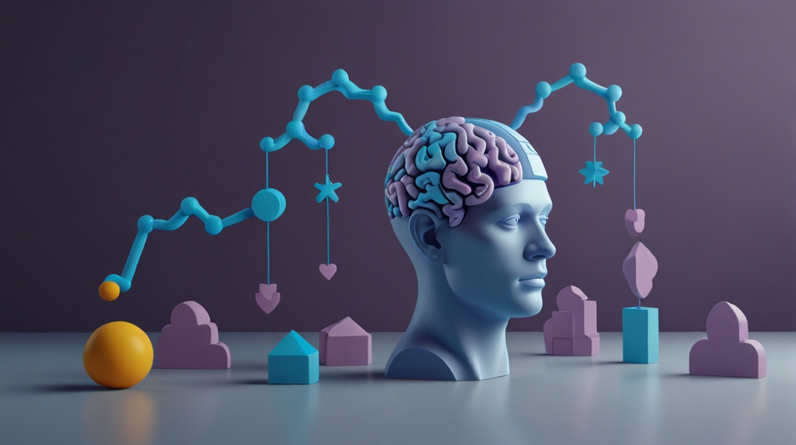

Understanding Mental Health
Explore what mental health means, how it affects us, and how we can care for ourselves and each other.
What is Mental Health?
Mental health refers to cognitive, behavioral, and emotional well-being. It’s how individuals handle stress, relate to others, and make choices. It doesn’t mean you’re happy all the time — it means you’re able to cope with the ups and downs of life.
When you're mentally healthy, you enjoy your life, your environment, and the people in it. You can be creative, learn, try new things, and take risks. You can cope when times are tough in your personal or professional life.
Why Mental Health Awareness Matters
When we talk about mental health openly, we make it easier for others to seek help. Awareness reduces stigma, encourages empathy, and creates a community where people feel seen and heard. It also increases funding, research, and resources for prevention and recovery programs.
Schools, workplaces, and communities benefit when mental health is prioritized. It leads to better focus, creativity, productivity, and relationships.
Everyday Signs You Might Be Struggling
- Constant fatigue, even after rest
- Losing interest in activities you used to enjoy
- Withdrawing from friends and family
- Increased irritability or mood swings
- Changes in appetite or sleep patterns
- Racing thoughts or feeling overwhelmed
- Physical symptoms like headaches or stomach aches with no clear cause
Mental Health vs Mental Illness
Mental health refers to our overall emotional and psychological well-being. Mental illness, on the other hand, includes specific diagnosable conditions that affect how we think, feel, and behave. It’s possible to have good mental health while living with a mental illness, and it’s also possible to experience poor mental health without having a diagnosable condition.
Understanding this difference is essential to reduce stigma. Mental illness is not a character flaw or weakness. It’s a medical condition—just like asthma or diabetes—and it deserves support and treatment.
Common Mental Health Disorders
- Depression: Persistent sadness and disinterest in life.
- Anxiety Disorders: Excessive fear or worry, often irrational or constant.
- Bipolar Disorder: Alternating periods of depression and mania.
- PTSD: Flashbacks and emotional distress from trauma.
- OCD: Repetitive, compulsive behaviors driven by anxious thoughts.
Myths and Misconceptions
Myth: Mental illness isn't real.
Truth: It’s as real as physical illness.
Myth: People with mental illness are dangerous.
Truth: Most are non-violent and often withdrawn.
Myth: You just need to be stronger.
Truth: Mental health issues are not signs of weakness.
Myth: Therapy is only for the weak.
Truth: Everyone can benefit from it.
Breaking these myths helps build understanding and safety. Misconceptions are often rooted in fear and a lack of education—but when we challenge them, we support a more inclusive society.
How to Take Care of Your Mental Health
- Connect with others: Build strong, healthy relationships.
- Stay active: Exercise improves mood and reduces stress.
- Sleep well: Rest is essential to emotional balance.
- Eat healthy: Nutrition supports brain function.
- Practice mindfulness: Stay present and grounded.
- Seek help: Reach out when you’re struggling.
Coping Tools for Everyday Life
Mental wellness is something we can actively nurture every day. You don’t need to hit a breaking point to start caring for your mind.
- 🌿 Practice daily gratitude (even one thing a day)
- 🧘 Try deep breathing or guided meditation
- 📝 Journal thoughts — especially on tough days
- 🎨 Express emotions through creative outlets like art or music
- 📵 Take social media detox days
- 💬 Talk to someone, even if it’s just to say “I need to vent”
Supporting Others
- Listen with empathy.
- Don’t minimize their experience.
- Offer support, not solutions.
- Respect their boundaries.
- Encourage professional help.
Mental Health Is a Global Conversation
Countries around the world are recognizing the importance of mental health. From school wellness programs to national suicide prevention campaigns, people are coming together to create change.

When Should You Seek Help?
Everyone experiences emotional ups and downs. But if you’ve been feeling persistently overwhelmed, disconnected, or unable to cope with daily life, it may be time to reach out for help.
- Your symptoms last more than two weeks
- You're avoiding responsibilities or people
- You feel hopeless, worthless, or empty
- You’re using substances to numb emotions
- You’ve thought about harming yourself
You’re never alone — and there is always someone ready to listen. Talk to a parent, friend, counselor, doctor, or mental health professional.
The Way Forward
Mental health is just as important as physical health. We all have a role to play in making mental health conversations more open and less stigmatized. Learn, speak up, and offer support — because every mind matters.